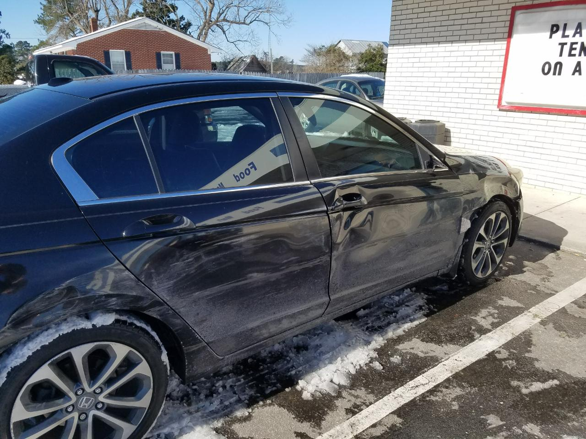

AFTER AN ACCIDENT
Collision
repair.
When a collision leaves you with body damage, start with a conversation. Manypenny's Auto Body works on accident-related body repairs in Wilmington.
CALL 910.392.4777 ↗
START WITH THE DAMAGE
Understand the repair before you plan the rest.
Damage can involve more than the panel you first notice. Call the shop to describe what happened and ask what they need to see to discuss an estimate, repair scope and likely next steps.
- Accident-related body and panel damage
- Questions about the repair estimate
- Help talking through insurance details
- Updates and communication during the process
Every vehicle and claim is different. Confirm services, parts availability, timing and coverage directly with the shop and your insurer.
Let's talk through it.
Call Manypenny's Auto Body in Wilmington.